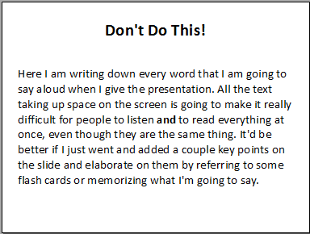
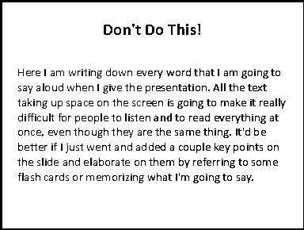
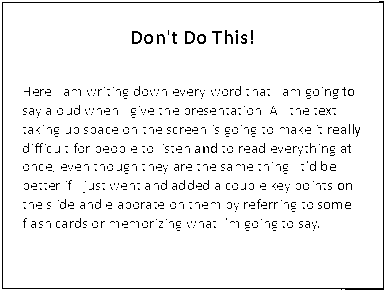
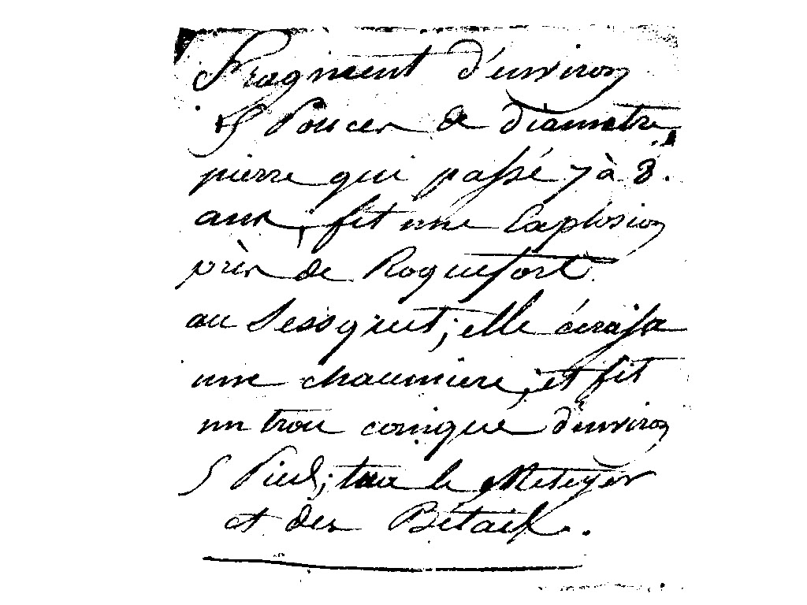

Assignment 2
For this assignment, we were tasked with editing certain images in specific given ways. I used different tools bundled with the GIMP software to complete each task.
-
1. Replace Colours
To turn the yellow background colour white, I simply used the paint bucket tool to fill in all of the yellow pixels.
-
2. Threshold Image #1
To separate the text from the gradient background I used a value threshold of 194.
-
3. Threshold Image #2
For this image, I used a value threshold of 55 in order to make the background completely white. This had the side effect, however, of causing some of the text to become cut off. To counteract this, you could increase the white threshold to allow more of the letter to show while also making some of the background keep it's gradient.
-
4. Threshold Image #3
In order to keep all of the paper's text visible while making the background as white as possible I used a threshold of 142. Many other thresholds around this value would also be effective depending on how much text you want to be visible vs how much of the background you want to remove so there is no single "best" threshold value that could be chosen.
-
5. Apply an Edge Detection Algorithm
Using a Sobel edge detection algorithm, I highlighted the points where each colour transitions into another. This results in the boundaries of both the black and grey rectangles becoming white while the centers of each along with the background become black. Similarly, while the edges of the lines forming the X become white, the center turns black highlighting the edge.
-
6. Apply Noise Reduction Algorithms
To reduce noise in the given picture I used two different filters. For the first I used GIMP's despeckle filter. This filter replaces each pixel with the median value of pixels within a given radius to smooth out groups of pixels. This results in a much smoother image however it also reduces much of the detail present in the original. The other method I used for noise reduction was a pick filter, this doesn't really make the image smoother but instead replaces pixels with a random other neighboring pixel.

{kind=link}
{kind=link}
{kind=link}
{kind=link}
{kind=link}
{kind=link}
Image: The European Space Agency